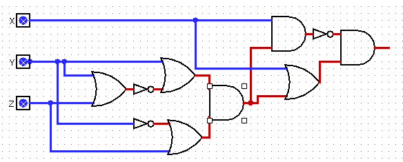

Introduction
Circuit minimization techniques are widely used in the semiconductor industry for reducing the physical size, latency and the heat emitted from circuits, and to reduce the total manufacturing cost of the circuit.
The problem of circuit minimization, or Boolean function minimization, deals with reducing the number of elements (logic gates or logic operators) in a circuit, or in a Boolean function, while keeping the original function. This problem is np-complete, and we have chosen to test the heuristic search approach - instead of calculating an exact solution, try to search the solution space using appropriate methods from the course.
Approaches and Methods
We chose to test two probabilistic methods we have seen in the course that proved to be quite successful in other fields. The first is Simulated Annealing, which were shown to be of great use by Kirkpatrick et al (1983), including, interestingly, physical computer design. The second is Genetic Programming, also at use in the field by Gruau (1992).
Simulated Annealing
Simulated annealing is a probabilistic algorithm for finding the global optimum of a function in a large search space. In its implementation it is similar to hill-climbing, but instead of selecting the best move it selects a random move. If the move improves the state, it is accepted. Otherwise, the move is accepted with a some probability. The probability decreases exponentially with the "badness" of the move compared to the current state. The probability also decreases with the number of iterations, T (temperature), "bad" moves are more likely to be allowed at the beginning of the search. If the T is lowered slowly enough, the algorithm will find a global optimum with probability approaching to 1.
In our implementation, the function recieves a truth table and returns a boolean expression that holds true to the truth table.
Search space
We used a graph representation of the circuit/boolean expression. The search space consists of all the possible permutations and combinations of AND(x,y), OR(x,y), and NOT(x) logic gates. Additionally we added limitations to the search space size by limiting the number of gates, and the circuit depth/height, since the computation time of a state's neighbors is exponential with the number of gates and in order to prevent a redundant search in places where we know for certainly the optimal solution doesn't reside.
Ranking a state
The most difficult part was to decide on a scoring function for each state that would correctly represent the "goodness" of a state relative to the other states.
For the number of lines in the truth table solved correctly we "rewarded" exponentially and for the number of gates we "punished" linearly.
Genetic Programming
In Genetic Programming (GP) we have a population of genes. Each gene has a fitness value (real number) that describes how close the gene is to the solution we're looking for. A gene can undergo a mutation, which produces a new gene. A pair of genes can be recombined to produce two new genes.
Results
Simulated Annealing
We ran our implementation on 2,3, and 4 variable truth tables. And compared the Simulated Annealing solution against the Quine-McCluskey algorithm solution using the SymPy logic library.
3 variable truth tables results:
We limited the search space to 2 times the number of gates in the naive POS and SOP solutions.
In the graph below we can see that a solution was found only for 30% of the the truth tables.
In the graph below we can see the distribution of the difference in the number of gates between the Quine-McCluskey solution and the solution found using Simulated Annealing.
Out of those 30%, almost 40% are better than the solution found by the Quine-McCluskey algorithm, more than 50% are comparable to Quine-McCluskey's solution, and less than 10% are worse.
The following circuits are an example for a 4 gate improvement over the Quine-McCluskey solution:
The circuit above represents
Or(And(x, y, ~z), And(x, ~y, z), And(~x, y, z), And(~x, ~y, ~z))
which is the Quine-McCluskey algorithm solution that uses 14 gates.
The solution contains gates with 3 inputs and 4 inputs and they each gate was counted as 2 and 3 gates respectively.
The next circuit represents
AND(NOT(AND(x,AND(OR(y,NOT(OR(y,z))),OR(z,NOT(y))))), OR(x,AND(OR(y,NOT(OR(y,z))),OR(z,NOT(y)))))
which is the solution found with Simulated Annealing that uses 10 gates.

Genetic Programming
Conclusions
Discuss the results vis-a-vis your goals and make conclusions.
Additional Information
- Link to the report (English or Hebrew) make sure that you haven't written your i.d. number or any other information that you don't want to be published!
- Any other link
References
"Optimization by Simulated Annealing | Science." Accessed August 19, 2018. http://science.sciencemag.org/content/220/4598/671/tab-article-info
"Genetic synthesis of Boolean neural networks with a cell ... - IEEE Xplore." Accessed August 19, 2018. https://ieeexplore.ieee.org/iel2/893/6782/00273948.pdf.